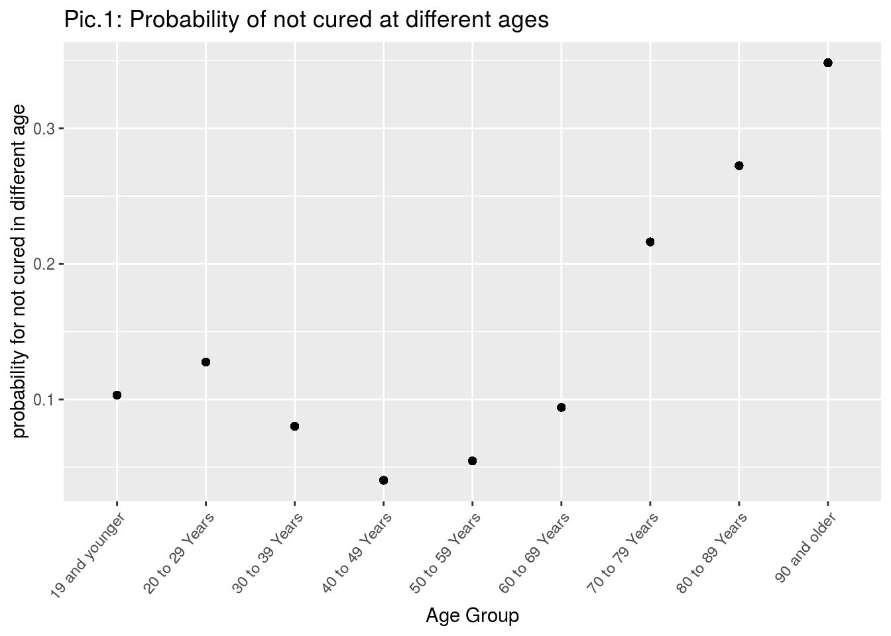
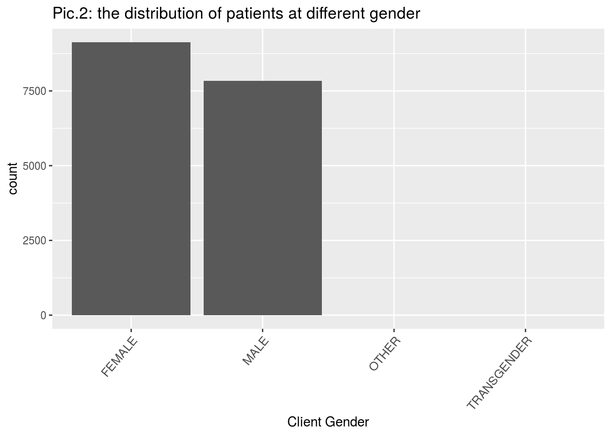
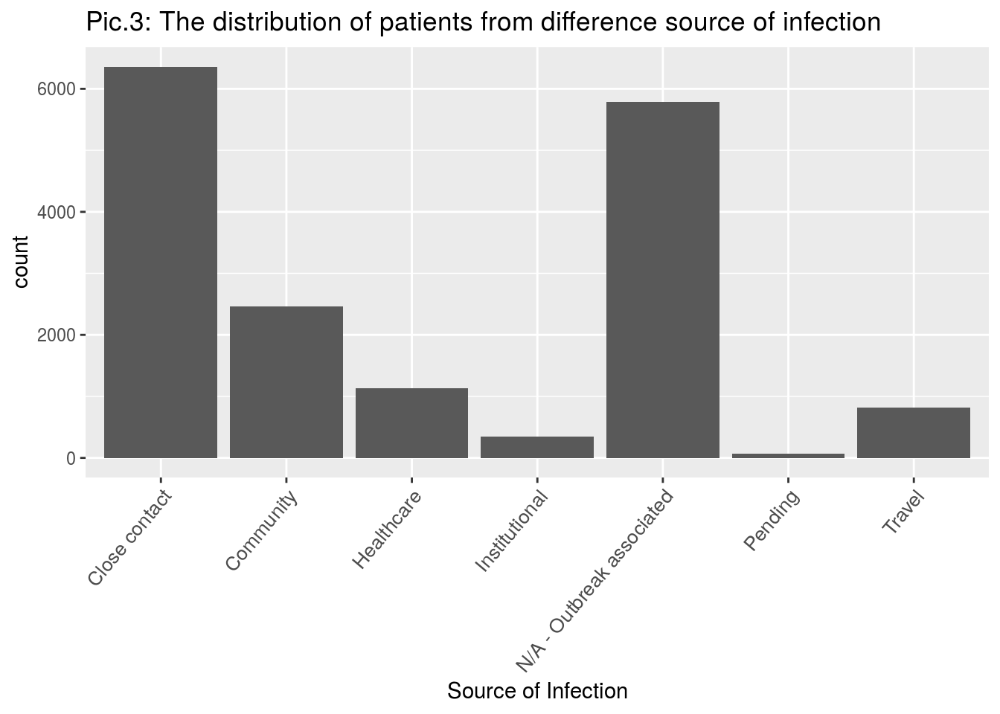
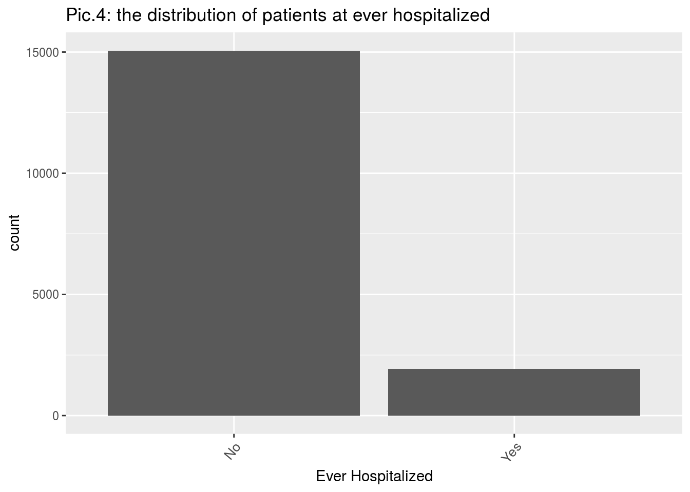
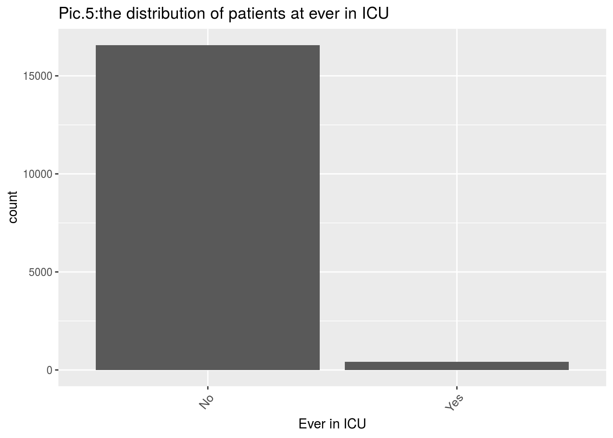
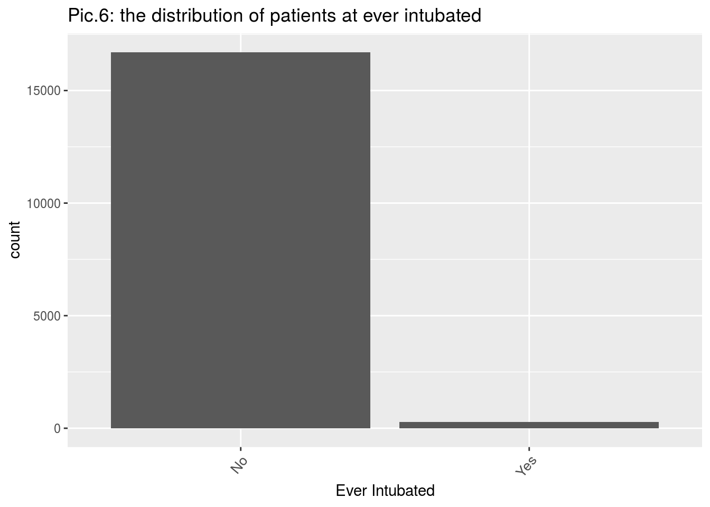

library(opendatatoronto)
library(tidyverse)## ── Attaching packages ───────────────────────────────────────────────── tidyverse 1.3.0 ──## ✓ ggplot2 3.3.2 ✓ purrr 0.3.4
## ✓ tibble 3.0.3 ✓ dplyr 1.0.2
## ✓ tidyr 1.1.2 ✓ stringr 1.4.0
## ✓ readr 1.3.1 ✓ forcats 0.5.0## ── Conflicts ──────────────────────────────────────────────────── tidyverse_conflicts() ──
## x dplyr::filter() masks stats::filter()
## x dplyr::lag() masks stats::lag()library(dplyr)
# get package
package <- show_package("64b54586-6180-4485-83eb-81e8fae3b8fe")
package## # A tibble: 1 x 10
## title id topics civic_issues excerpt dataset_category num_resources formats
## <chr> <chr> <chr> <chr> <chr> <chr> <int> <chr>
## 1 COVI… 64b5… <NA> <NA> <NA> <NA> 1 <NA>
## # … with 2 more variables: refresh_rate <chr>, last_refreshed <date># get all resources for this package
resources <- list_package_resources("64b54586-6180-4485-83eb-81e8fae3b8fe")
# identify datastore resources; by default, Toronto Open Data sets datastore resource format to CSV for non-geospatial and GeoJSON for geospatial resources
datastore_resources <- filter(resources, tolower(format) %in% c('csv', 'geojson'))
# load the first datastore resource as a sample
data <- filter(datastore_resources, row_number()==1) %>% get_resource()
data## # A tibble: 17,872 x 18
## `_id` Assigned_ID `Outbreak Assoc… `Age Group` `Neighbourhood … FSA
## <int> <int> <chr> <chr> <chr> <chr>
## 1 143647 1 Sporadic 50 to 59 Y… Willowdale East M2N
## 2 143648 2 Sporadic 50 to 59 Y… Willowdale East M2N
## 3 143649 3 Sporadic 20 to 29 Y… Parkwoods-Donal… M3A
## 4 143650 4 Sporadic 60 to 69 Y… Church-Yonge Co… M4W
## 5 143651 5 Sporadic 60 to 69 Y… Church-Yonge Co… M4W
## 6 143652 6 Sporadic 50 to 59 Y… Newtonbrook West M2R
## 7 143653 7 Sporadic 80 to 89 Y… Milliken M1V
## 8 143654 8 Sporadic 60 to 69 Y… Willowdale West M2N
## 9 143655 9 Sporadic 50 to 59 Y… Willowdale East M2N
## 10 143656 10 Sporadic 60 to 69 Y… Henry Farm M2J
## # … with 17,862 more rows, and 12 more variables: `Source of Infection` <chr>,
## # Classification <chr>, `Episode Date` <chr>, `Reported Date` <chr>, `Client
## # Gender` <chr>, Outcome <chr>, `Currently Hospitalized` <chr>, `Currently in
## # ICU` <chr>, `Currently Intubated` <chr>, `Ever Hospitalized` <chr>, `Ever
## # in ICU` <chr>, `Ever Intubated` <chr>#check missing values#
colSums(is.na(data))## _id Assigned_ID Outbreak Associated
## 0 0 0
## Age Group Neighbourhood Name FSA
## 0 0 0
## Source of Infection Classification Episode Date
## 0 0 0
## Reported Date Client Gender Outcome
## 0 0 0
## Currently Hospitalized Currently in ICU Currently Intubated
## 0 0 0
## Ever Hospitalized Ever in ICU Ever Intubated
## 0 0 0#Remove some variables#
data1 <- data %>% select(3:12,16:18)
#check data types
str(data1)## tibble [17,872 × 13] (S3: tbl_df/tbl/data.frame)
## $ Outbreak Associated: chr [1:17872] "Sporadic" "Sporadic" "Sporadic" "Sporadic" ...
## $ Age Group : chr [1:17872] "50 to 59 Years" "50 to 59 Years" "20 to 29 Years" "60 to 69 Years" ...
## $ Neighbourhood Name : chr [1:17872] "Willowdale East" "Willowdale East" "Parkwoods-Donalda" "Church-Yonge Corridor" ...
## $ FSA : chr [1:17872] "M2N" "M2N" "M3A" "M4W" ...
## $ Source of Infection: chr [1:17872] "Travel" "Travel" "Travel" "Travel" ...
## $ Classification : chr [1:17872] "CONFIRMED" "CONFIRMED" "CONFIRMED" "CONFIRMED" ...
## $ Episode Date : chr [1:17872] "2020-01-22" "2020-01-21" "2020-02-05" "2020-02-16" ...
## $ Reported Date : chr [1:17872] "2020-01-23" "2020-01-23" "2020-02-21" "2020-02-25" ...
## $ Client Gender : chr [1:17872] "FEMALE" "MALE" "FEMALE" "FEMALE" ...
## $ Outcome : chr [1:17872] "RESOLVED" "RESOLVED" "RESOLVED" "RESOLVED" ...
## $ Ever Hospitalized : chr [1:17872] "No" "Yes" "No" "No" ...
## $ Ever in ICU : chr [1:17872] "No" "No" "No" "No" ...
## $ Ever Intubated : chr [1:17872] "No" "No" "No" "No" ...#divide three types of outcomes into two#
#create new variables#
data2 = data1
data2$Outcome = as.factor(ifelse(data2$Outcome == "RESOLVED", "Resolved", "No"))
#Data processing
#1)Age
#Remove the observation with invalid data
data2 <- data2 %>% filter(`Age Group` != "NaN") %>%
filter(`Source of Infection` !="Unknown/Missing") %>%
filter(`Client Gender` != "UNKNOWN")
#Test whether there are differences in the probability of resolved at different ages#
data3 <- data2%>% group_by(`Age Group`) %>%
mutate(`probability for not cured in different age` = mean(Outcome == "No"))
#graph
ggplot(data3, aes(x = `Age Group`, y = `probability for not cured in different age`)) +
geom_point() + labs(title = "Pic.1: Probability of not cured at different ages") +
theme(axis.text.x = element_text(angle = 50, hjust = 1))
#2)Gender
#Test whether there are differences in the probability of resolved at different gender#
ggplot(data = data3, aes(x=`Client Gender`)) + geom_bar() +
labs(title = "Pic.2: the distribution of patients at different gender") +
theme(axis.text.x = element_text(size=10, angle = 50, hjust = 1))
data3 %>% group_by(`Client Gender`) %>% summarise(`Probability of not cured at different gender` = mean(Outcome == "No"))## `summarise()` ungrouping output (override with `.groups` argument)## # A tibble: 4 x 2
## `Client Gender` `Probability of not cured at different gender`
## <chr> <dbl>
## 1 FEMALE 0.119
## 2 MALE 0.130
## 3 OTHER 0
## 4 TRANSGENDER 0#3) Neighbourhood & type of infection source
table(data3$`Neighbourhood Name`)##
## Agincourt North Agincourt South-Malvern West
## 100 65
## Alderwood Annex
## 53 96
## Banbury-Don Mills Bathurst Manor
## 49 137
## Bay Street Corridor Bayview Village
## 73 41
## Bayview Woods-Steeles Bedford Park-Nortown
## 120 97
## Beechborough-Greenbrook Bendale
## 111 142
## Birchcliffe-Cliffside Black Creek
## 195 328
## Blake-Jones Briar Hill - Belgravia
## 18 103
## Bridle Path-Sunnybrook-York Mills Broadview North
## 25 30
## Brookhaven-Amesbury Cabbagetown-South St. James Town
## 177 48
## Caledonia-Fairbank Casa Loma
## 43 36
## Centennial Scarborough Church-Yonge Corridor
## 39 138
## Clairlea-Birchmount Clanton Park
## 218 80
## Cliffcrest Corso Italia-Davenport
## 65 61
## Danforth Danforth-East York
## 19 36
## Don Valley Village Dorset Park
## 72 171
## Dovercourt-Wallace Emerson-Junction Downsview-Roding-CFB
## 109 493
## Dufferin Grove East End-Danforth
## 73 34
## Edenbridge-Humber Valley Eglinton East
## 113 125
## Elms-Old Rexdale Englemount-Lawrence
## 100 181
## Eringate-Centennial-West Deane Etobicoke West Mall
## 91 125
## Flemingdon Park Forest Hill North
## 133 38
## Forest Hill South Glenfield-Jane Heights
## 26 543
## Greenwood-Coxwell Guildwood
## 30 152
## Henry Farm High Park North
## 82 60
## High Park-Swansea Highland Creek
## 77 49
## Hillcrest Village Humber Heights-Westmount
## 73 195
## Humber Summit Humbermede
## 159 196
## Humewood-Cedarvale Ionview
## 32 51
## Islington-City Centre West Junction Area
## 399 51
## Keelesdale-Eglinton West Kennedy Park
## 65 114
## Kensington-Chinatown Kingsview Village-The Westway
## 119 342
## Kingsway South L'Amoreaux
## 36 103
## Lambton Baby Point Lansing-Westgate
## 23 45
## Lawrence Park North Lawrence Park South
## 22 28
## Leaside-Bennington Little Portugal
## 28 57
## Long Branch Malvern
## 33 267
## Maple Leaf Markland Wood
## 155 27
## Milliken Mimico (includes Humber Bay Shores)
## 58 163
## Morningside Moss Park
## 194 219
## Mount Dennis Mount Olive-Silverstone-Jamestown
## 221 531
## Mount Pleasant East Mount Pleasant West
## 27 159
## New Toronto Newtonbrook East
## 92 28
## Newtonbrook West Niagara
## 266 112
## North Riverdale North St. James Town
## 25 195
## O'Connor-Parkview Oakridge
## 82 66
## Oakwood Village Old East York
## 116 24
## Palmerston-Little Italy Parkwoods-Donalda
## 37 85
## Pelmo Park-Humberlea Playter Estates-Danforth
## 102 58
## Pleasant View Princess-Rosethorn
## 38 32
## Regent Park Rexdale-Kipling
## 44 145
## Rockcliffe-Smythe Roncesvalles
## 159 41
## Rosedale-Moore Park Rouge
## 35 332
## Runnymede-Bloor West Village Rustic
## 24 122
## Scarborough Village South Parkdale
## 113 207
## South Riverdale St.Andrew-Windfields
## 44 27
## Steeles Stonegate-Queensway
## 51 70
## Tam O'Shanter-Sullivan Taylor-Massey
## 96 88
## The Beaches Thistletown-Beaumond Heights
## 23 119
## Thorncliffe Park Trinity-Bellwoods
## 139 46
## University Victoria Village
## 33 78
## Waterfront Communities-The Island West Hill
## 305 132
## West Humber-Clairville Westminster-Branson
## 540 184
## Weston Weston-Pellam Park
## 356 49
## Wexford/Maryvale Willowdale East
## 97 82
## Willowdale West Willowridge-Martingrove-Richview
## 60 178
## Woburn Woodbine Corridor
## 334 22
## Woodbine-Lumsden Wychwood
## 23 77
## Yonge-Eglinton Yonge-St.Clair
## 17 25
## York University Heights Yorkdale-Glen Park
## 468 200data3 %>% group_by(`Neighbourhood Name`) %>%
summarise(prob = mean(`Outbreak Associated` == "Outbreak Associated"))## `summarise()` ungrouping output (override with `.groups` argument)## # A tibble: 141 x 2
## `Neighbourhood Name` prob
## <chr> <dbl>
## 1 Agincourt North 0.2
## 2 Agincourt South-Malvern West 0.154
## 3 Alderwood 0.245
## 4 Annex 0.208
## 5 Banbury-Don Mills 0.143
## 6 Bathurst Manor 0.336
## 7 Bay Street Corridor 0.123
## 8 Bayview Village 0.122
## 9 Bayview Woods-Steeles 0.792
## 10 Bedford Park-Nortown 0.258
## # … with 131 more rows#4)Source of Infection
ggplot(data = data3, aes(x=`Source of Infection`)) + geom_bar() +
labs(title = "Pic.3: The distribution of patients from difference source of infection") +
theme(axis.text.x = element_text(size=10, angle = 50, hjust = 1))
#5)Ever hospital&Ever in ICU&Ever intubated
data3 %>% group_by(`Ever Hospitalized`) %>%
summarise(`probability for not cured after hospitalized` = mean(Outcome == "No"))## `summarise()` ungrouping output (override with `.groups` argument)## # A tibble: 2 x 2
## `Ever Hospitalized` `probability for not cured after hospitalized`
## <chr> <dbl>
## 1 No 0.103
## 2 Yes 0.294data3 %>% group_by(`Ever in ICU`) %>%
summarise(`probability for not cured after ICU` = mean(Outcome == "No"))## `summarise()` ungrouping output (override with `.groups` argument)## # A tibble: 2 x 2
## `Ever in ICU` `probability for not cured after ICU`
## <chr> <dbl>
## 1 No 0.117
## 2 Yes 0.423data3 %>% group_by(`Ever Intubated`) %>%
summarise(`probability for not cured after Intubated` = mean(Outcome == "No"))## `summarise()` ungrouping output (override with `.groups` argument)## # A tibble: 2 x 2
## `Ever Intubated` `probability for not cured after Intubated`
## <chr> <dbl>
## 1 No 0.119
## 2 Yes 0.469#limitation here
ggplot(data = data3, aes(x=`Ever Hospitalized`)) + geom_bar() +
labs(title = "Pic.4: the distribution of patients at ever hospitalized") +
theme(axis.text.x = element_text(size=10, angle = 50, hjust = 1))
ggplot(data = data3, aes(x=`Ever in ICU`)) + geom_bar() +
labs(title = "Pic.5:the distribution of patients at ever in ICU") +
theme(axis.text.x = element_text(size=10, angle = 50, hjust = 1))
ggplot(data = data3, aes(x=`Ever Intubated`)) + geom_bar() +
labs(title = "Pic.6: the distribution of patients at ever intubated") +
theme(axis.text.x = element_text(size=10, angle = 50, hjust = 1))